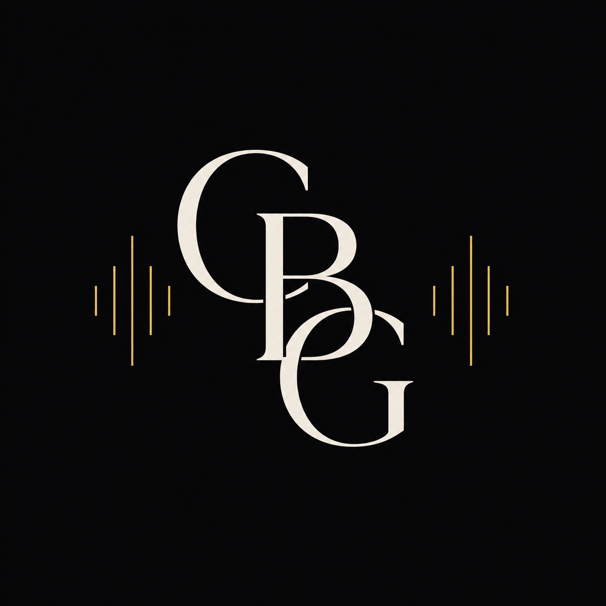

Haciendo que cada alumno
encuentre su voz en la música.

Soy Carles Broseta, profesor de Música en secundaria y trombonista con formación orquestal.
Cuento con una sólida base musical adquirida en conservatorios y centros de referencia. Aplico una metodología cercana y actual, que conecta la música con los intereses y el lenguaje de mis alumnos.
Apuesto por un aprendizaje activo basado en proyectos con sentido real, donde el alumno no solo estudia música, sino que la vive, la crea y crece a través de ella.
Una selección de proyectos del currículum en secundaria.
El cuerpo como instrumento. Coordinación, ritmo y expresión sin necesitar nada más que las manos.
Analizamos cómo la música influye en los anuncios y en las decisiones del consumidor. Los alumnos crean un producto propio y le dan vida con una banda sonora diseñada para impactar.
Exploramos la Inteligencia Artificial como herramienta creativa para componer canciones originales.
Unimos la tradición valenciana con la percusión contemporánea en un proyecto único de identidad cultural.
Iniciación al ukelele: postura, acordes básicos e interpretación de canciones. Un instrumento accesible para explorar la armonía y el acompañamiento.
Crear una obra musical propia con Musescore, entendiendo estructura, armonía y orquestación.
La voz como primer instrumento. Trabajamos la técnica vocal, la afinación y el canto en grupo para perder el miedo escénico y descubrir el placer de cantar juntos.
El cuerpo en movimiento como forma de entender la música. Exploramos danzas tradicionales y contemporáneas, conectando el ritmo, la expresión y el trabajo en grupo.
Los contenidos teóricos e históricos se trabajan con metodología flipped classroom: el alumno accede al material en casa y en clase lo consolidamos con kahoots interactivos y debate.
Uso de instrumentos de pequeña percusión, láminas y metalófonos para trabajar el ritmo, la melodía y el acompañamiento de forma práctica, corporal y colectiva.
Conocemos las familias de instrumentos y su papel dentro de la orquesta sinfónica. El proyecto culmina con una excursión para asistir a un ensayo real y vivir la música desde dentro.
Altura, intensidad, timbre y duración trabajados a través de proyectos prácticos: escucha activa, experimentación sonora y creación de piezas que ponen en juego cada cualidad.
Los alumnos crean su propio podcast de noticias musicales de actualidad: seleccionan temas, redactan los guiones, graban los episodios y los producen. Un proyecto que combina expresión oral, análisis musical y trabajo en equipo.
Escríbeme directamente. Leo todos los mensajes, respondo lo antes posible.